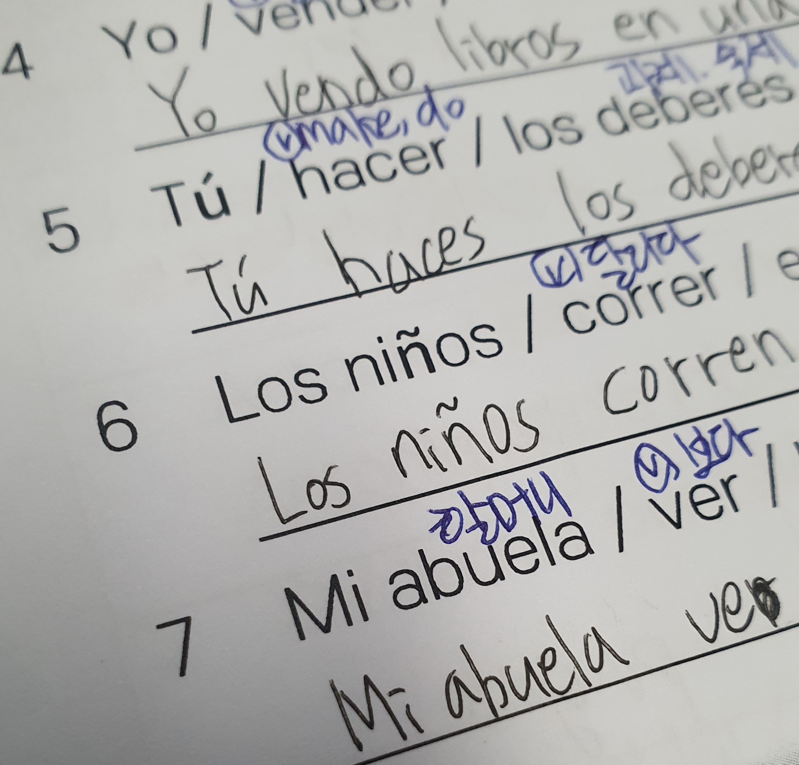
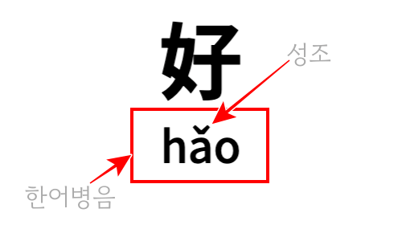
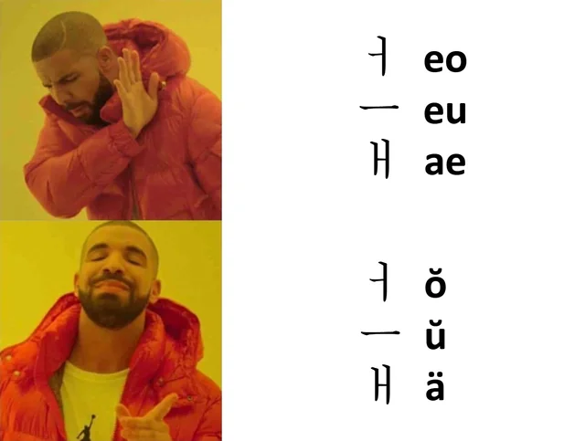

다이어크리틱
다이어크리틱(Diacritic)이란 글자의 위나 아래에 찍어 기존의 철자와 다른 발음이나 의미를 부여하는 기호이다.
다이어크리틱은 로마자와 키릴 문자를 사용하는 언어에서 광범위하게 사용된다. 그러나 영어 외의 외국어를 접해본 적 없는 나에게는 굉장히 생소하게 다가온 개념이었다. 다이어크리틱을 사용하는 언어가 그렇지 않은 언어보다 많지만, 이를 사용하지 않는 영어가 세계공용어로서 나에게 영향을 가장 크게 끼쳤기에 생소함을 느낀 것이다. 이러한 현상에서 영어의 권위가 작동하고 있다고 생각했고, 그래서 다양한 언어에서 다이어크리틱이 어떻게 사용되는지 궁금했다.
스페인어
이 주제를 탐구하게 된 계기가 된 언어이다. 동아리를 통해 스페인어를 배우게 되면서 다이어크리틱으로 표기하는 발음 변화에 대해 알게 되었기 때문이다.
스페인어에서는 Tilde(ñ), tréma(ü), acute(é), grave(á)의 네 가지 다이어크리틱을 사용한다. Tilde는 n과 ñ을 구분하는 데에 쓰인다. tréma는 u 위에 붙어 [gwe], [gwi] 발음을 표기하는 데에 쓰인다. 아무것도 붙이지 않고 gue, gui로 표기할 때에는 [ge], [gi] 발음으로 읽는다. acute와 grave는 모음 위에 붙어 강세를 나타내는 데에 쓰인다.
셋 중 Tilde로 구분되는 n과 ñ은 다른 글자로 치지만, tréma와 acute, grave는 붙이더라도 같은 글자로 취급된다.
중국어
중국어는 보통 한자로 표기하지만, 발음을 표기할 때 사용하는 한어병음에서 로마자를 사용한다. 이때 성조를 표기하기 위해 다이어크리틱을 사용한다.
중국어에서는 macron(ā), acute(á), caron(ǎ), grace(à)의 네 가지 다이어크리틱을 사용한다. 차례대로 1성(음평성), 2성(양평성), 3성(상성), 4성(거성)을 표기할 때 쓰인다. 발음할 때에는 표기한 모양대로 높고 평이한 소리, 올라가는 소리, 내려갔다가 올라가는 소리, 내려가는 소리를 나타낸다.
한국어
한국어를 로마자로 표기할 때에도 다이어크리틱을 사용하는 경우가 있었다. 현재는 잘 사용되지 않는 매큔-라이샤워 표기법을 따를 때 breve(˘)와 diaeresis(¨)를 사용한다. ㅓ를 ŏ, ㅡ를 ŭ, ㅏ나 ㅗ 뒤의 '에'를 ë로 표기한다.
매큔-라이샤워 표기법은 현재는 잘 사용되지 않지만 그 흔적은 쉽게 찾아볼 수 있다. 대구와 경북을 통틀어 TK라고 부를 때가 있는데, 이는 해당 표기법을 따른 표기인 Taegu-kyŏngbuk의 줄임말이다.